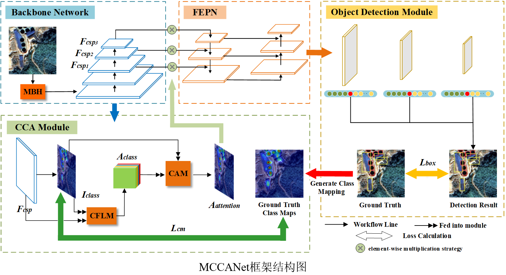
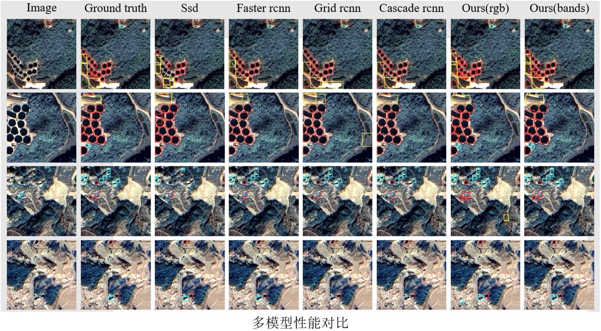
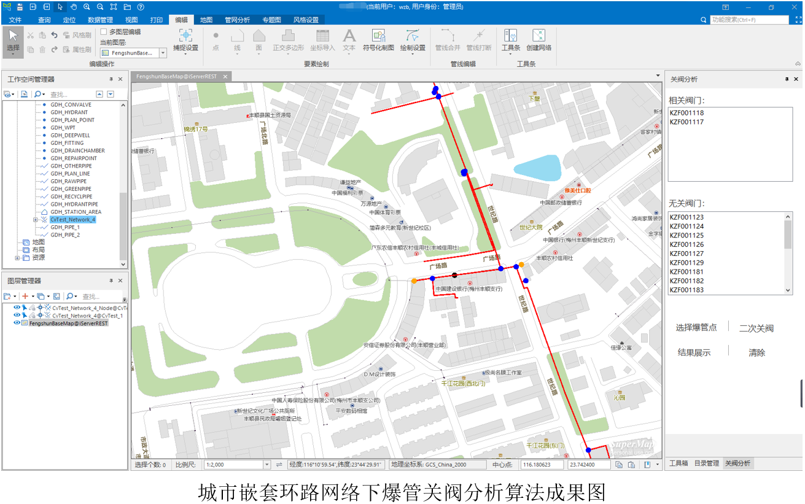
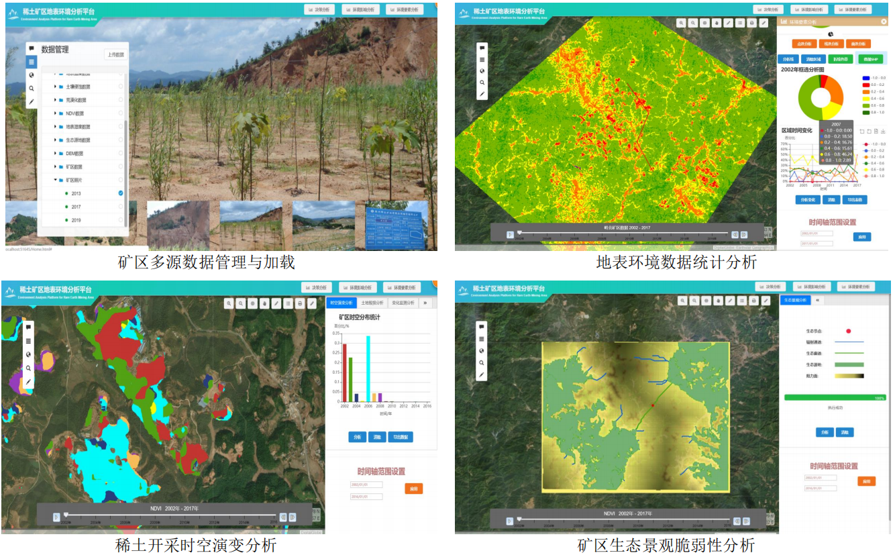
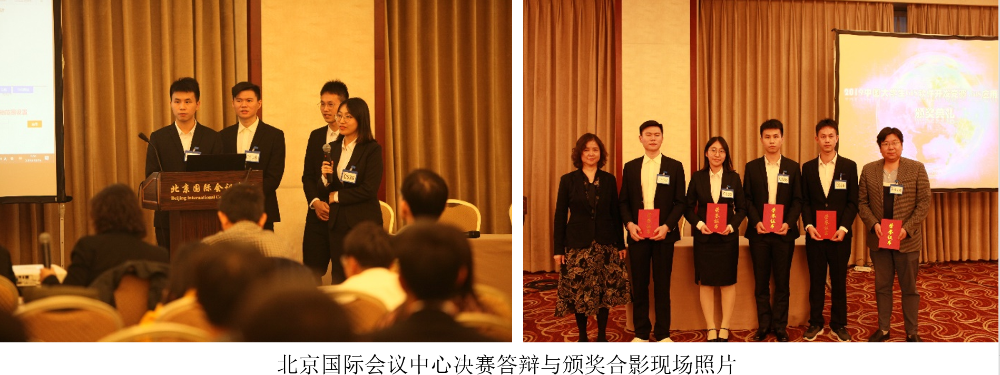

武镇邦
Email: giserbang@163.com
| 出生年月：1997.02 | 电话：13767506609 |
| 籍贯：江西高安 | 政治面貌：中共党员 |
| 专业：地理学 | 研究方向：遥感智能解译与深度学习 |
| 毕业院校：江西理工大学 |
| 出生年月：1997.02 | 电话：13767506609 |
| 籍贯：江西高安 | 政治面貌：中共党员 |
| 专业：地理学 | 研究方向：遥感智能解译与深度学习 |
| 毕业院校：江西理工大学 |
本人以第一作者身份已发表期刊论文2 篇，其中1 篇CSCD论文，1 篇SCI论文，以及1 篇外审中。
1、本人最新实验研究中，为解决中国南方丘陵山地的矿区场景中大量复杂背景信息加剧了地理实体间语义的混淆性的问题，提出了一种创新性的目标检测神经网络框架 MCCANet
 2、担任开发总负责人参与 广东粤海水务管网地理信息系统 的研发工作， 构建了城市复杂嵌套管网环路的爆管关阀分析算法模型
3、担任团队队长构建了多种算法模型并实现平台化“稀土矿区地表环境分析平台”， 获Esri软件开发大赛Web开发组全国一等奖
 